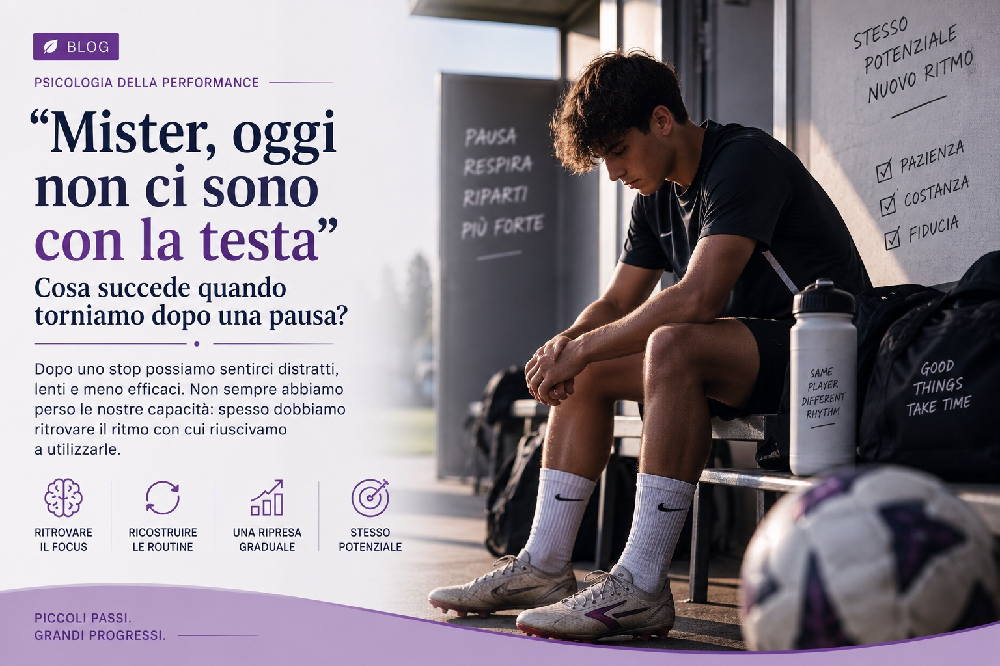

"Mister, oggi non ci sono con la testa": cosa succede quando torniamo dopo una pausa?
Dopo uno stop possiamo sentirci distratti, lenti e meno efficaci. Non sempre abbiamo perso le nostre capacita: spesso dobbiamo ritrovare il ritmo con cui riuscivamo a utilizzarle.
Ilaria Dammicco
Pubblicato il 19 Settembre 2026 · 9 min di lettura
"Mister, oggi non ci sono con la testa."
Nel linguaggio dello sport e una frase comune. La pronuncia il giovane atleta che continua a dimenticare una consegna. Ma potrebbe dirla anche quello piu esperto, quando si accorge di essere in ritardo nelle decisioni, meno preciso del solito o incapace di leggere con lucidita una situazione che, fino a qualche settimana prima, sembrava quasi automatica.
Fuori dal campo utilizziamo espressioni diverse, ma raccontiamo la stessa sensazione.
Rileggiamo piu volte una mail senza comprenderla davvero. Impieghiamo il doppio del tempo per svolgere un compito semplice. Fatichiamo a riprendere lo studio, a organizzare la giornata o a mantenere la concentrazione senza cercare continuamente una distrazione.
Succede spesso dopo le vacanze, al ritorno da un infortunio o semplicemente quando riprendiamo un'attivita interrotta per qualche tempo.
Ed e proprio allora che compare il dubbio:
"Ho perso la concentrazione? Sono diventato meno motivato? Perche non riesco piu a fare cio che prima mi veniva naturale?"
Forse la risposta e meno preoccupante di quanto sembri.
Non sempre siamo diventati meno capaci. A volte dobbiamo semplicemente ritrovare il ritmo che ci permetteva di esprimere quelle capacita.
Ci aspettiamo di ripartire esattamente da dove ci eravamo fermati
Il problema del rientro non e soltanto cio che accade, ma cio che ci aspettiamo che accada.
Sappiamo ancora eseguire quel gesto tecnico. Conosciamo il nostro lavoro. Ricordiamo il programma da studiare. Per questo pretendiamo di tornare immediatamente agli stessi livelli di attenzione, precisione ed efficienza raggiunti prima della pausa.
Ma stiamo confrontando due momenti molto diversi.
Prima dello stop: un sistema allenato, organizzato e sostenuto da routine consolidate, come il ritmo dopo diversi chilometri di corsa.
Al rientro: un sistema che sta ricominciando proprio adesso, come i primi passi appena usciti di casa.
Le competenze possono essere ancora presenti. Cio che puo mancare, almeno inizialmente, e la stessa facilita nell'accedervi.
Che cosa perdiamo davvero durante una pausa?
Nella scienza dello sport si parla di detraining per indicare la perdita parziale degli adattamenti ottenuti attraverso l'allenamento quando lo stimolo viene interrotto o ridotto per un certo periodo.
Gli studi mostrano che alcuni cambiamenti fisiologici possono iniziare a comparire gia dopo poche settimane. Tempi ed effetti, pero, dipendono dalla durata dello stop, dal livello di allenamento precedente e dalle attivita mantenute durante la pausa.
Una precisazione importante
Sarebbe scorretto concludere che esista, allo stesso modo, un vero e proprio "detraining dell'attenzione" provocato dalle vacanze. La ricerca non ci permette di affermarlo in maniera cosi diretta.
Possiamo pero osservare qualcosa di importante: tornando a un'attivita, dobbiamo riattivare non soltanto il corpo, ma anche l'insieme di abitudini e riferimenti che sostenevano la nostra prestazione.
Orari
Rituali
Linguaggio condiviso
Sequenze di azioni
Gestione della fatica
Dove dirigere lo sguardo
Prima della pausa, molti di questi elementi funzionavano quasi automaticamente. Al rientro possono richiedere nuovamente una parte della nostra attenzione.

L'attenzione non e una luce da accendere
Quando qualcuno appare distratto, la spiegazione piu immediata e spesso anche la piu semplice:
"Non ha voglia."
"Non ascolta."
"E ancora in vacanza."
Ma l'attenzione non e una luce che decidiamo volontariamente di accendere o spegnere. E un sistema limitato, chiamato continuamente a selezionare alcune informazioni e a lasciarne sullo sfondo molte altre.
Un ruolo importante e svolto dalla memoria di lavoro, cioe dalla capacita di mantenere temporaneamente disponibili alcune informazioni mentre le utilizziamo.
Durante un allenamento, un atleta deve ricordare la consegna, controllare il proprio corpo, osservare i compagni, anticipare l'avversario e modificare rapidamente l'azione.
Nel lavoro possiamo dover ricordare una procedura mentre rispondiamo a un collega, controlliamo una scadenza e prendiamo una decisione.
Le nostre risorse, pero, non sono infinite.
Se una parte dell'attenzione viene assorbita dal recupero di procedure, ritmi e automatismi diventati meno immediati, ne rimane meno disponibile per tutto il resto.
Quello che appare come scarso impegno puo essere, almeno in alcuni casi, un sovraccarico momentaneo.
La competenza non coincide sempre con la prestazione
Conoscere questa differenza puo cambiare il modo in cui viviamo il rientro.
Competenza
Cio che abbiamo imparato
Riguarda cio che abbiamo imparato e siamo in grado di fare. Resta, anche quando non riusciamo a mostrarla subito al massimo livello.
Prestazione
Cio che esprimiamo ora
E cio che riusciamo concretamente a esprimere in un determinato momento, dentro condizioni specifiche: fatica, pressione, sonno, emozioni, carico cognitivo.
Il primo errore dopo una pausa non dimostra che abbiamo perso tutto.
La lentezza dei primi giorni non dimostra che siamo diventati pigri.
La difficolta a concentrarci non dimostra automaticamente che non siamo piu motivati.
Potrebbe semplicemente raccontare una fase di riadattamento.
Il rischio di voler recuperare tutto e subito
Quando ci sentiamo meno efficienti, la reazione piu comune e aumentare immediatamente lo sforzo.
Aggiungiamo allenamenti, obiettivi e ore di lavoro. Pretendiamo piu concentrazione. Cerchiamo di compensare la pausa riempiendo ogni spazio disponibile.
Ma il tentativo di recuperare tutto contemporaneamente puo produrre l'effetto opposto: aumenta il carico, alimenta la frustrazione e rende ogni errore una presunta prova del fatto che siamo "tornati indietro".
Lo stesso rischio dell'allenatore
Davanti a una squadra poco attenta, moltiplica le spiegazioni e le correzioni. Ma piu informazioni non significano necessariamente piu apprendimento. A volte significano soltanto piu informazioni da gestire.
Come si ritrova il ritmo?
Non attraverso una frase motivazionale e neppure imponendosi di essere immediatamente efficienti.
Il ritmo si ricostruisce creando le condizioni che rendono nuovamente possibile una buona prestazione.
Ridurre le priorita. Nei primi giorni e piu utile identificare pochi obiettivi chiari che tentare di recuperare contemporaneamente tutto cio che e stato interrotto.
Ripristinare le routine. Un rituale prima dell'allenamento, una sequenza stabile con cui iniziare il lavoro o un orario dedicato allo studio riducono il numero di decisioni da prendere e aiutano la mente a riconoscere cio che sta per accadere.
Alternare cio che e familiare a cio che e nuovo. Ripartire da attivita gia conosciute permette di recuperare sicurezza e automatismi prima di aumentare la complessita.
Dare consegne essenziali. Nello sport, nel lavoro e nell'apprendimento, un'indicazione precisa e osservabile e spesso piu efficace di molte correzioni contemporanee.
Valutare il percorso dal punto di partenza attuale. La domanda piu utile non e "Perche non sono gia come prima?", ma "Che cosa e diventato piu fluido rispetto a quando ho ricominciato?"
Forse la testa c'e. Sta solo ritrovando le coordinate
Quando diciamo "oggi non ci sono con la testa", immaginiamo una mente assente, lontana da cio che dovrebbe fare.
Ma forse, qualche volta, quella mente e tutt'altro che assente.
E impegnata a recuperare riferimenti. A riconoscere nuovamente i segnali importanti. A trasformare in automatico cio che, dopo la pausa, richiede ancora uno sforzo cosciente.
Riprendere non significa dimostrare di non aver perso nulla. Significa permettere a cio che abbiamo costruito di tornare progressivamente accessibile.
Per questo, prima di giudicare un atleta distratto, un collaboratore rallentato o noi stessi nelle giornate in cui tutto sembra piu faticoso, potremmo fermarci e cambiare domanda.
Non soltanto:
"Perche non riesci a concentrarti?"
Ma:
"Di che cosa hai bisogno per ritrovare il tuo ritmo?"
Perche non sempre siamo meno capaci. A volte siamo semplicemente fuori ritmo. E il ritmo non si ritrova pretendendo tutto subito, ma ricostruendo, un passo alla volta, le condizioni che ci permettono di esprimerci al meglio.
Riferimenti e approfondimenti
Mujika, I., & Padilla, S. (2000). Detraining: loss of training-induced physiological and performance adaptations. Part I: Short term insufficient training stimulus. Sports Medicine, 30(2), 79-87.
Cowan, N. (2014). Working Memory Underpins Cognitive Development, Learning, and Education. Educational Psychology Review, 26, 197-223.
Diamond, A. (2013). Executive Functions. Annual Review of Psychology, 64, 135-168.
Donnelly, J. E., et al. (2016). Physical Activity, Fitness, Cognitive Function, and Academic Achievement in Children: A Systematic Review. Medicine & Science in Sports & Exercise, 48(6), 1197-1222.
Iscriviti alla newsletter
per non perdere i prossimi contenuti.
Ci vediamo sabato prossimo 🦋
La teoria è utile.
La pratica cambia tutto.
Ogni articolo nasce dall'esperienza sul campo. Se un tema ti riguarda, il passo successivo è trasformarlo in un percorso concreto.